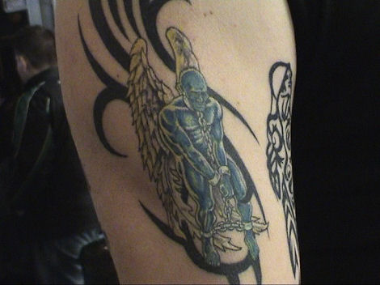

|
Roda JC - Feyenoord (1-2) 29 oktober 2006 |
Mooie sfeeractie in het Parkstad limburg Stadion.
(foto:http://www.sv-online.info)
Het volle gastenvak met een duidelijke boodschap.
Oper in duel met Buijs in een energieke eerste helft.
De optredens van Marco Borsucko zitten erop. Draai je nu maar even om
Mark
want.....
...hier volgt een fantastisch schot van Ramzi.
De bal gaat in de rechterbovenhoek buiten bereik van Timmer: 1-0, (20').
Feest in het bijna uitverkochte PLS.
Voor overtredingen van Feyenoord zoals hier werd nauwelijks gefloten.
Scheidsrechter Haverkort trok opzichtig partij.
Zo niet volgen er de provocaties van de "topploeg".
Schitterend schot van Van Tornhout dat met een superieure reflex van Timmer
wordt gekeerd.
Roda kreeg voldoende kansen om de voorsprong te vergroten.
Saeijs ruimt de bal niet op waardoor....

...Charisteas zijn eerste Feyenoorddoelpunt kan scoren: 1-1, (39').
Typisch Roda zoiets....
Goedzo Haverkort mien jong, dit was dus helemaal niks. Maar toch de groeten
uit Euverem.
De voor Cissé ingekomen Vandamme kan niet overtuigen.
Indruk van de drukte op de tribunes.
Kah maakt een aanval van Charisteas onschadelijk.
Huysegems is te snel voor De Fauw.
De Belg tikt de bal met zijn linkervoet....

...tergend langzaam via de paal het doel in: 1-2, (66'). Door geen enkele camera
geregistreerd en daarom binnenkort op deze site te zien hoe de bal via een
polletje fataal naar links krult.
Net als verleden seizoen, feest in het PLS voor Rotterdam-Zuid.
Bouchiba krijgt ook nog een kwartiertje (ten koste van Bodor).
Respect voor deze senior Rodasupporter plus
mantelzorg!
In de tweede helft is Feyenoord de betere ploeg en sleept daardoor de tweede
zege op rij binnen. Trainer Erwin Koeman is zo blij dat hij met de spelers
meeloopt om de Feyenoord-aanhang te bedanken.
Voor ons resteert slechts een applaus voor onze karakterjongens waarvan Kah
een
exponent is.
Voor de ingang van de KickOff prijkt Izz met nu nog nieuwere tattoos.

Al zijn lichaamsversieringen tonen is onbegonnen werk. Daarom volgende
keer meer.
Veel spelers in het home waaronder Agustien, die vandaag voor het eerst niet
werd opgesteld.
Voor Edrissa Sonko werd uitbundig gezongen.
Story-alert: Vladan Kujovic heeft zich zijn nieuwe coupe aangemeten op
aandringen van zijn vrouw omdat hij anders te aantrekkelijk is (bron: V.K.).
Juist, jij ja! En je weet wel waarom...... Tot gauw!
Marcel Meeuwis met Ruud en nachwuchs.
Voor foto-reportages vanuit Feyenoord-perspectief:
Feyenoord Foto Fansite
>>>
FR Fotopage
>>>
©
Koempels Pleasure Dome
|